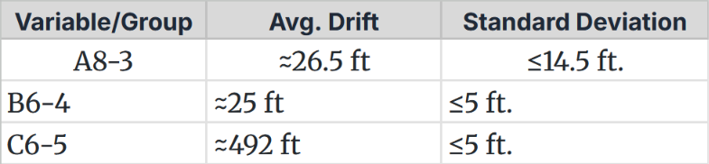

The Effect of Different Engine Types in a Model Rocket on Distance from Launchpad
Affiliation: Student: Pyramid Project 2026-2027 [Date]
Abstract
Different rocket engines in a model rocket affect what altitude the rocket will attain. This principle is known as “Potential Altitude”. The question is whether Potential Altitude affects drift, or the distance from the launchpad the rocket lands at. The idea is that drift happens because of wind, and the higher up you go. The farther you drift. Different engines were tested, and results recorded. There were multiple launches to ensure accuracy. The three kinds of engines: A8-3, B6-4, and C6-5 were launched in the same rocket. The furthest drift was achieved by the C engine. The Drift was almost exactly proportional to the airtime achieved. The control, the A8-3, was suggested by the FAA to land within fifty feet. The B6-4 was supposedly within 200 ft; and the C6-5 was within 500 ft, and it did, but only barely.
Keywords: model rocket; engine type; launch distance; FAA
1. Introduction
The model rocket has been a tool in having fun for years. People love explosives and things that go fast! The FAA even suggests using them to learn basic aeronautics. But, people have been getting on the internet asking these questions: “How far do they go?” “Where can I launch them?” “How much space do I need?” These questions have never been answered before today. The rocket will show you. (Drumroll!)
2. Materials and Methods
2.1 Study Design and Setting
I used a rocket.
Four engines, all made by Estes Rockets, were selected for the test. They included two A8-3 engines, one B6-4 engine, and one C6-5 engine. All were inspected and checked by the launch conductor. The rocket was assembled and checked according to local and state law. The control agent, the A8-3 engine, was expected by the manufacturer to land within a 50 ft radius of the launchpad, the B engine was expected to land within 200 ft, and the C6-5 was expected to land within 500 ft.
2.2 Materials
Four engines, all made by Estes Rockets, were selected for the test. They included two A8-3 engines, one B6-4 engine, and one C6-5 engine. All were inspected and checked by the launch conductor. The rocket was assembled and checked according to local and state law. The control agent, the A8-3 engine, was expected by the manufacturer to land within a 50 ft radius of the launchpad, the B engine was expected to land within 200 ft, and the C6-5 was expected to land within 500 ft.
2.3 Experimental Procedure
I thought I might launch the rocket, and see how far it went. We'll see. Ah, yes, here it is:
The A8-3 was launched on two different days, and the other engines came one after the A engine the first day, and the other the second day. After the launch of the A engine, the trajectory of the rocket was adjusted by sight for the next launch, the B engine one day, the C engine the other.
2.4 Statistical Analysis
After each launch, the distance from the launchpad to the rocket was measured, before any movement of the rocket to clear the launch zone. Measurements were recorded and averaged. (I literally just measure how far it went. There were no fancy shenanigans with funky calculations to explain.)
3. Results
3.1 Primary Outcome: Landing Distance From Launchpad
Potential altitude may not affect horizontal travel. The C6-5 engine went the farthest, at a mean of 492 ft. The B6-4 engine averaged 25 ft., with the A8-3 averaging 26.5 ft. The C6-5 went almost due west, with the B6-4 going southwest, and the A8-3’s both going east.
Table 1: Average distance from launchpoint (average drift).

3.2 Secondary Outcomes
The time each launch spent in the air is almost directly proportional to thrust and altitude potential. The C6-5 spent the most time in the air, at 2:30 minutes. The other engines both spent less, with the B6-4 at 0:40 minutes, and the A8-3 at 30 seconds. I would much rather ride a rocket that stays up for more than 30 seconds. This is why you should always get the rocket with the most thrust, no matter the cost to your wallet or skeleton.

4. Discussion
The Utah State Laws suggest UNREASONABLY large areas for a class A or class B rocket engine. The radius suggested could be decreased by 10-15 ft. Air time is directly connected to average drift.
5. Conclusion
Engine Thrust and Potential Altitude affect the landing point of a rocket. Change in drift distance grows exponentially with an increase of engine power. Air time is also exponentially affected by engine power.
Acknowledgments
The Author thanks Estes rockets, and other faculty that supplied the rocket and engines. Many thanks to those that helped with the launch. And extensive thanks and gratitude to Ryan Drumright, MD, for the amazing surgical care he gave my eyes after they were impaled by a rocket. Also, the author acknowledges that he really would appreciate donations, and also maybe a really nice car, like a corvette.
Funding
The author funded this by extortion and blackmail of his wallet until it agreed to pay up.
Conflict of Interest
The author declares no competing interests. Unless you mean the fact that he is not a fan of FAA regulations regarding where you can launch a rocket. Or that he wants everyone to buy este class C rockets. Or that perhaps, he might want them to send the engines they will undoubtedly buy to him.
Data Availability
If you cannot find the data in the paper that I wrote to contain data, you might want to see an eye doctor; I know a really good one, but I will not disclose his name for his security. Datasets are available at: https://zelk-boy.github.io/dataset zelk-boy.github.io/EliFentonRocketData.
Here is the QR code to my data. Isn't the t-rex so cute?